O relator, o cearense Mauro Benevides Filho (União-CE), manteve o texto aprovado pelo Senado por 69 a 2 em 18/11 e rejeitou as emendas. Antes, a urgência passou por 318 a 135. Governo e oposição divergiram sobre cortes e impostos. Pág. 2.
No mercado, o Ibovespa teve a 3ª queda seguida e fechou a 164.796 pontos. Lá fora, a Nasdaq subiu 6,51% e recuperou a queda de sexta. O petróleo caiu mais de 3%. Pág. 4.
O ministro da Saúde anunciou em Londres testes de uma vacina terapêutica com Oxford e Fiocruz em 2027. Pág. 7.
🌡️ Jaguaribe marcou 40,6 °C. Em 2026, as mortes violentas caíram cerca de 47% no estado. Pág. 3.
💰 Bastter e Black Friday (20–21) · 😂 Tirinhas (22–23) · 📜 Sangue sagrado e Rasputin (24–25) · 🏛️ Generosidade (26–27) · ⚖️ Pausas e superlua (28–29).
O placar. O texto-base do PLP 299/2026 teve 353 votos a favor, 128 contra e 5 abstenções, segundo o JOTA e o Brasil de Fato. Projeto de lei complementar precisa de 257 votos. Antes, a urgência foi aprovada por 318 a 135 (Estado de Minas).
O que falta. Se os destaques forem rejeitados, o texto vai à sanção presidencial. Se algum for aprovado, o projeto volta ao Senado, que o aprovou por 69 a 2 em 18/11, com relatoria de Eduardo Braga (MDB-AM). O resultado dos destaques não estava confirmado no fechamento desta edição.
O relator. Mauro Benevides Filho (União-CE) manteve o texto do Senado para evitar nova rodada de votação. As estimativas de quanto o pacote rende variam entre as fontes, de cerca de R$ 45 bilhões a R$ 56 bilhões em 2027.
Os lados. Pelo governo, o deputado Paulo Pimenta (PT-RS) negou que haja cortes em saúde e educação. Pela oposição, os deputados Júlia Zanatta (PL-SC) e Sóstenes Cavalcante (PL-RJ) disseram que o projeto aumenta impostos e não resolve as contas, segundo o Brasil de Fato.
Contingenciamento. Segundo o Estado de Minas, o governo indicou que o Ministério do Planejamento anunciaria nesta terça um bloqueio de despesas.
Articulação política. O Diário Oficial de 23/11 publicou a exoneração, a pedido, de José Guimarães da Secretaria de Relações Institucionais. O decreto, de 19/11, não nomeia sucessor.
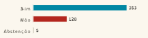
| Ter 24 | Destaques, se não votados na madrugada · anúncio de bloqueio de despesas |
| Qua–Qui | Comissão de Orçamento segue com a LOA 2027 |
| 4/12 | Dosimetria no STF (plenário virtual) |
| 16/12 | 42 horas semanais (liminar da 6x1) |
⛈️ Rio Grande do Sul: desde 20/11, a Defesa Civil contabiliza 5 mortes, 265 feridos, 19.854 desalojados e 48 desabrigados (Agência Brasil, 23/11).
📝 Gabarito oficial publicado em 18/11, com uma questão de matemática anulada. Reaplicação em 15 e 16/12; notas em 18/01/2027.
O jornal não toma partido. Publica fatos, números oficiais e declarações atribuídas, com o mesmo tratamento a todos os lados.
Calor. A estação do Inmet em Jaguaribe registrou 40,6 °C na segunda (23), segundo o GCMais. Para Sobral, a previsão desta terça vai de 22 a 38 °C, sem chuva, com alerta do Inmet de baixa umidade até 26/11. A Funceme prevê pouca chance de chuva na madrugada e tempo firme à tarde.
Segurança. Dados da Senasp, do Ministério da Justiça, divulgados em 19/11 mostram 1.339 vítimas de crimes violentos letais no Ceará de janeiro a outubro de 2026, contra 2.523 no mesmo período de 2025. A reportagem fala em queda de 47,3%; pela conta com esses números, a queda é de cerca de 46,9%.
Governo. A vice-governadora Jade Romero assumiu o Executivo durante a viagem de Elmano de Freitas à Suíça e à Itália, iniciada em 21/11, para um encontro sobre educação. Na Assembleia, a LOA 2027 prevê R$ 52,4 bilhões, alta de 9%, com R$ 5,7 bilhões em investimentos, incluindo a Linha Leste do Metrô. Emendas até 4/12.
Justiça eleitoral. Ciro Gomes pediu ao STF a suspensão do julgamento no TRE-CE em que recorre de condenação por violência política de gênero contra Janaína Farias (PT). A defesa dela não se manifestou na matéria. No TRE, 4 dos 7 juízes votaram por manter a condenação, e há pedido de vista.
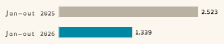
🦠 O Ceará soma 205 casos de mpox em 2026, 169 em Fortaleza (IntegraSUS até 23/11). Dengue: 15 mil casos até 18/10 (p.7).
Calor seco: idoso com diurético, lítio ou anticolinérgico desidrata rápido. Pense em sódio e rim. Suspeita de mpox: precaução de contato e gotículas e notificação. Siga o protocolo da CCIH.
22 a 38 °C, sem chuva, umidade baixa à tarde. Água por perto, sol forte das 10h às 16h e atenção a crianças e idosos.
Aqui. O Ibovespa perdeu 1.580 pontos e fechou a 164.796. Segundo a Suno e o BPMoney, pesaram a incerteza sobre o comando da Fazenda em 2027, a piora do Focus e a queda da Petrobras. O dólar chegou a R$ 6,006 na máxima e fechou a R$ 5,926, interrompendo seis altas seguidas.
Focus. O mercado subiu a projeção do IPCA de 2026 para 5,15% e a de 2027 para 5,12%. A Selic esperada no fim de 2027 passou de 12,75% para 13%. O câmbio do fim de 2026 foi a R$ 5,55. Só uma fonte publicou os números até o fechamento.
Lá fora. O S&P 500 subiu 4,74% e a Nasdaq, 6,51%, depois da queda de sexta. Segundo a Fox Business e o BPMoney, a Nvidia saltou mais de 31% com a volta de Jensen Huang ao cargo de CEO. O fechamento do Dow diverge nas fontes.
Petróleo e Fed. O Brent caiu a US$ 89,37 e o WTI a US$ 80,17, com a reabertura do oleoduto de Sharara, na Líbia. O Fed mantém os juros entre 3,75% e 4,00%; a ferramenta FedWatch, da CME, apontava cerca de 96% de chance de alta em 9/12.
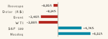
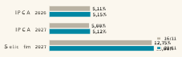
| Ter 24 | Anúncio de bloqueio de despesas (previsto) · ajuste fiscal: destaques | Qui 26 | IPCA-15 · Ação de Graças nos EUA |
| Qua 25 | PCE de outubro nos EUA, 8h30 (hora local) | Sex 27 | Black Friday · 9/12: Copom e Fed |
R$ 6 é manchete, não ordem de compra. Gasto em dólar? Defina o teto antes e divida em datas. Ninguém acerta o pico nem o fundo.
Bolsa em sobe e desce atrai "gurus". Grupo que promete recuperar perdas em dias é sinal de alerta. Confira registro na CVM.
Regra das 72 h: decisão financeira tomada no dia da notícia costuma ser impulso. Espere três dias e releia o plano.
Polônia. A promotoria de Lublin identificou os três objetos como mísseis Kh-101, segundo o ProtoThema. O Conselho do Atlântico Norte se reuniu na segunda (23). No sábado, em Varsóvia, o secretário-geral Mark Rutte disse que a aliança defenderá "cada centímetro do território polonês" (Arab News).
Ucrânia. Segundo o ISW, a Ucrânia atingiu duas embarcações russas perto de Benghazi, na Líbia; Kiev confirmou a ação e o Kremlin a chamou de terrorismo (WSJ e Reuters). Na noite de 21 para 22, a Rússia lançou 186 drones. Em Dymer, 14 pessoas ficaram desaparecidas após ataque com drone (Politico).
Golfo. O Bahrein diz que um ataque iraniano atingiu área industrial civil em 21/11 e feriu duas pessoas; a Guarda Revolucionária afirmou ter mirado posições dos EUA (Reuters). O Irã diz que usará "todas as ferramentas" contra o bloqueio naval americano.
Gaza. Um ataque israelense a um caminhão matou 3 pessoas, segundo o Ministério da Saúde local; o Exército de Israel diz que o alvo era da Jihad Islâmica (Reuters).
EUA e Europa. Uma ordem de Donald Trump obriga empresas contratadas pelo governo a coordenar com a Casa Branca respostas a investigações do Congresso. O deputado Jamie Raskin a chamou de ilegal; a Casa Branca diz proteger prerrogativas do Executivo. A Dinamarca expulsou o adido de defesa russo por suspeita de plano contra um artista ucraniano.
Terremoto de magnitude 7,2 em 21/11, a 125 km de profundidade, sentido em Díli, sem danos relevantes. Sismos profundos tremem longe, mas costumam destruir menos.
72 h Enchente em Kapuas Hulu, no Bornéu indonésio, afeta 28,9 mil pessoas. Contexto A COP31 terminou em 22/11 sem decisão principal; cerca de 130 países pediram a transição dos fósseis.
🗳️ Eleições locais em Taiwan no sábado (28) e eleição parlamentar antecipada na Espanha no domingo (29).
🏛️ Democratas terão 258 cadeiras na Câmara, contra 173, com 4 disputas abertas. O novo Congresso toma posse em 3/1/2027.
Números de guerra vêm de partes em conflito. O jornal atribui cada dado à fonte e não toma lado.
Respostas: A Origem das Espécies · Olinda · Lucy.
Dia do Instrutor de Libras · superlua cheia · festival hindu de Kartika Purnima. Amanhã: Dia Nacional do Doador de Sangue e Dia pela Eliminação da Violência contra as Mulheres.
Darwin explica a resistência antimicrobiana: o antibiótico seleciona o germe que sobrevive. A Semana Mundial da OMS sobre o tema termina hoje (p.7). Mercury morreu de complicações da aids, antes da terapia combinada de 1996.
O incêndio de Olinda, em 1631, marcou a ocupação holandesa no Nordeste, que durou até 1654. A cidade virou Patrimônio Mundial da Unesco em 1982.
Mpox no Ceará. Os dados do IntegraSUS até 23/11 somam 205 casos confirmados em 2026, 169 em Fortaleza, cerca de 82%. A alta começou em outubro e acelerou em novembro, segundo O Povo. A nº 017 citava 175 casos.
Ebola. O boletim da OMS de 20/11 registra 11.613 casos confirmados e 5.678 mortes pelo vírus Bundibugyo na RD Congo até 17/11, letalidade de 48,9%. O Quênia tem 9 casos e 2 mortes. Em 18/11, a OMS manteve a emergência de saúde pública de importância internacional e desaconselhou restrições de viagem. A vacina licenciada contra ebola é para outra espécie do vírus, a Zaire.
Vacina contra câncer. Em Londres, na segunda (23), o ministro Alexandre Padilha anunciou que o Brasil deve testar, no 1º semestre de 2027, uma vacina terapêutica desenvolvida com a Universidade de Oxford e a Fiocruz. Detalhes do tipo de câncer e do desenho do estudo não foram publicados.
Resistência. Termina hoje a Semana Mundial de Conscientização sobre a Resistência aos Antimicrobianos, com o tema One Health, one action e o novo Plano de Ação Global 2026–2036.
Estudos. No JAMA, um biomarcador no sangue (eMTBR-tau) acompanhou a carga de tau em 21 ex-jogadores de futebol americano com encefalopatia traumática crônica: estudo pequeno, sem uso clínico. Em comunicado, sem revisão por pares, a Erasca relatou redução tumoral relevante em 44% de 25 pacientes com câncer de pâncreas numa fase 1 de pílula anti-RAS, com uma morte por pneumonite.
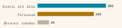
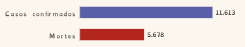
72 h FDA: somapacitana semanal para baixa estatura na síndrome de Turner, a partir de 2,5 anos (20/11). EMA e Anvisa: nada relevante encontrado.
Lesões de pele que evoluem juntas, febre e linfonodos. Transmissão por contato próximo. Suspeita é de notificação imediata.
Contexto A AMIB lançou em 13/11 a campanha "Orgulho de ser intensivista", pela UTI conduzida por médico com título na especialidade.
Conteúdo educativo e jornalístico. Não substitui avaliação médica. Siga o protocolo institucional e as notas técnicas do Ministério e da Sesa.
| Etapa | O que fazer | ⚠️ Pegadinha de prova |
|---|---|---|
| 1. Limiar | Na maioria dos críticos estáveis, transfundir com Hb < 7 g/dL (TRICC; TRISS no choque séptico; AABB 2023). | 7 é gatilho, não meta. TRISS: metade das bolsas, mesma mortalidade (43,0 × 45,0%). |
| 2. Exceções | AABB 2023: 7,5 em cirurgia cardíaca e 8 em ortopedia ou doença cardiovascular prévia. No infarto agudo com anemia, considerar limiar mais alto. | MINT (2023): liberal (Hb 10) × restritiva (7–8), morte ou reinfarto em 30 dias 14,5 × 16,9%, sem significância. |
| 3. Dose | Uma unidade e reavaliar. Em adulto sem sangramento, cada bolsa eleva a Hb em cerca de 1 g/dL. | "Duas bolsas de rotina" dobram o risco sem dobrar o benefício. |
| 4. Maciça | Protocolo de transfusão maciça 1:1:1, cálcio, aquecimento e ácido tranexâmico em até 3 h no trauma (CRASH-2). | PROPPR: menos morte por exsanguinação em 24 h (9,2 × 14,6%); em 30 dias, sem diferença. |
| 5. Reação | TRALI: até 6 h, hipoxemia e infiltrado bilateral sem sobrecarga; suporte. TACO: até 12 h, hipertensão e congestão; diurético. | Febre e hipotensão na 1ª hora: pare a bolsa. Pense em hemólise ABO ou contaminação. |
Conteúdo educativo. Siga o protocolo institucional.
Mulher de 74 anos com IC recebe 2 bolsas seguidas. Duas horas depois: dispneia, PA 182/100, crepitações e turgência jugular. Caso inventado, para estudo.
Conduta: parar a transfusão, sentar, oxigênio ou VNI e diurético. É TACO, não TRALI. Notificar a hemovigilância. Na próxima vez: 1 bolsa, infusão lenta e reavaliação.
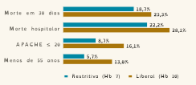
Em 2024, o STF decidiu que o adulto capaz pode recusar transfusão por motivo religioso e que o SUS deve oferecer alternativas disponíveis. Registre a decisão e envolva a equipe. Ver p.24.
Coletas diárias de rotina causam anemia na UTI. Peça só o que muda conduta e use tubos menores: é parte do patient blood management.
| Etapa | O que fazer | ⚠️ Pegadinha de prova |
|---|---|---|
| 1. Confirmar | Plaquetas < 150 mil/µL. Sem sangramento? Repita em tubo com citrato e olhe o esfregaço. | Pseudotrombocitopenia por EDTA: aglomerados no esfregaço, paciente sem sangramento. |
| 2. Causa | Sepse e CIVD, diluição, drogas (linezolida, vancomicina, betalactâmicos), cirrose e baço, microangiopatia, PTI. | Queda de mais de 50% entre o 5º e o 10º dia de heparina é HIT até prova em contrário. |
| 3. 4Ts | 2 pontos cada: queda > 50% com nadir ≥ 20 mil · início em 5–10 dias · trombose nova · sem outra causa. 0–3 baixo, 4–5 intermediário, 6–8 alto. | Escore baixo dispensa o anti-PF4: valor preditivo negativo de cerca de 99,8%. |
| 4. HIT | Intermediário ou alto: suspender toda heparina, inclusive flush, e iniciar anticoagulante não heparínico (argatrobana, fondaparinux ou DOAC). Pedir anti-PF4. | HIT trombosa, não sangra: plaqueta de rotina não. Varfarina só com plaquetas recuperadas. |
| 5. PTT | Anemia hemolítica com esquizócitos, plaquetopenia e LDH alta: PLASMIC, ADAMTS13 e plasmaférese urgente. | ADAMTS13 < 10% confirma. Transfundir plaqueta na PTT pode piorar a trombose. |
Conteúdo educativo. Siga o protocolo institucional.
Homem de 66 anos, 7º dia de enoxaparina após prótese de quadril. Plaquetas de 250 mil caem para 95 mil; panturrilha esquerda inchada. Caso inventado, para estudo.
4Ts = 8 (alto). Suspender a enoxaparina, iniciar fondaparinux ou argatrobana, pedir anti-PF4 e ultrassom de membros (p.10). Sem plaqueta, sem varfarina agora.
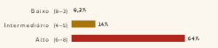
Plaqueta em queda é critério de gravidade (SOFA). Pense em CIVD: TP, fibrinogênio e D-dímero.
PACER (2023), plaquetas 10–50 mil: sem transfusão, mais sangramento do cateter (11,9 × 4,8%).
Plaquetopenia mais comum após cerca de 2 semanas de uso. Monitore o hemograma.
Transdutor linear, paciente com a perna levemente rodada para fora. Comprima a veia femoral comum na junção com a safena e a veia poplítea atrás do joelho. Veia normal colapsa por completo com pressão que mal deforma a artéria. Em metanálise com emergencistas, a técnica de 2 pontos teve sensibilidade de cerca de 91% e especificidade de cerca de 98%.
⚠️ Pegadinha: 2 pontos não veem a panturrilha. Exame negativo com suspeita alta pede D-dímero ou repetição em 1 semana. Linfonodo não tem fluxo nem continuidade.
Em quem tem infarto prévio ou cardiopatia estrutural, a maioria das taquicardias de QRS largo é ventricular. Falam a favor de TV: dissociação AV, batimentos de captura e fusão, concordância de todo o precordial, ausência de RS de V1 a V6 ou RS acima de 100 ms (Brugada) e onda R inicial em aVR (Vereckei). Instável: cardioversão sincronizada. Estável: amiodarona 150 mg IV em 10 min (AHA).
⚠️ Pegadinha: estabilidade não descarta TV. Verapamil em QRS largo pode levar ao colapso.
O alto fluxo atende à demanda inspiratória, lava o espaço morto e gera um pouco de PEEP com a boca fechada. No FLORALI, na insuficiência respiratória hipoxêmica, a intubação não diferiu de forma significativa, mas a morte em 90 dias foi menor. ROX = (SpO₂/FiO₂) ÷ FR: ≥ 4,88 em 2, 6 ou 12 h indica boa chance de sucesso.
⚠️ Pegadinha: alto fluxo não é para adiar a intubação indicada. ROX abaixo de 3,85 em 12 h sinaliza falha.
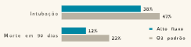
Quais os 2 pontos? Femoral comum e poplítea.
Dissociação AV no QRS largo? TV.
ROX de sucesso? ≥ 4,88.
Anthropic. A empresa estreou na Nasdaq em 19/11, com o código ANT. A ação foi precificada a US$ 83 e abriu a US$ 111,50; a captação foi de cerca de US$ 81,3 bilhões, e a Fox Business a chamou de maior IPO da história. Na segunda (23), era negociada a US$ 85,58, segundo o 24/7 Wall St.
Transparência: este jornal é produzido com o Claude, da Anthropic. A notícia segue as mesmas regras das demais e não é recomendação de investimento.
Limites comuns. Jakub Pachocki, cientista-chefe da OpenAI, propôs limites de desenvolvimento compartilhados entre laboratórios, com apoio de Sam Altman. Alexandr Wang, da Meta, alertou para o risco de sistemas que se aperfeiçoam sozinhos (Yahoo Finance, 22/11).
Grok. Os procuradores-gerais do Oregon e da Virgínia processaram a SpaceX por alegações sobre a segurança do chatbot Grok, segundo a WIRED.
Segurança. CNN e NBC relataram em 20/11 a invasão do NCIC, o banco nacional de dados criminais do FBI, o 2º incidente do órgão no ano. A NBC também citou um aparente ataque ao Departamento de Agricultura.
Apple. O acordo na ação coletiva da Siri, nos EUA, deve pagar cerca de US$ 65 por iPhone, até US$ 95 (MacRumors). Segundo Mark Gurman, iPhone 18e, iPad de entrada e um "MacBook Neo" estão previstos para fevereiro ou março.
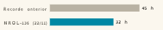
🤖 O Android 17 QPR2 chegou aos Pixel do 6a ao 11 em 10/11, com a atualização mensal de segurança.
🛰️ Depois da falha de um Vulcan em 15/11, a Amazon previa lançar satélites Leo num Ariane 6 em 23/11. O resultado não foi confirmado até o fechamento.
Vazamento grande no noticiário vira isca de golpe: "seu dado vazou, clique aqui". Ninguém sério pede senha por link.
Beira-Rio. Renê abriu o placar para o Vitória aos 12 segundos. Tarzia, Ramon, Baralhas e Renato Kayzer completaram o 5 a 2. Com 44 pontos, o Vitória quase garante a permanência; o Inter segue com 38, em 18º.
Morumbis. O Grêmio venceu o Santos por 2 a 0, gols de Amuzu e de Braithwaite, de pênalti, e chegou a 41 pontos. O time gaúcho decide a Copa do Brasil contra o Palmeiras em 6/12, em Brasília.
Nilton Santos. Botafogo e São Paulo empataram por 1 a 1, com gols de Pedro Lima e Tiquinho Soares. Marçal e Wendell foram expulsos.
O campeão. O Flamengo, campeão desde sábado com 80 pontos, volta a campo no domingo (29), às 16h, contra o Coritiba. A permanência do técnico Leonardo Jardim não foi confirmada pelo clube.
A maratona do Palmeiras. Chapecoense hoje, final da Libertadores no sábado (28), última rodada em 2/12 e final da Copa do Brasil em 6/12.
O que falta. Atlético-MG × Corinthians fecha a rodada na quarta (25), às 20h. A 38ª rodada será em 2/12, com todos os jogos às 21h30.
| 1 Flamengo © | 80 | 11 Coritiba | 45 |
| 2 Palmeiras | 74 | 12 São Paulo | 45 |
| 3 Cruzeiro | 66 | 13 Vitória | 44 |
| 4 Fluminense | 63 | 14 Botafogo | 43 |
| 5 Athletico-PR | 57 | 15 Grêmio | 41 |
| 6 Bahia | 54 | 16 Mirassol | 41 |
| 7 Atlético-MG* | 51 | 17 Corinthians* | 40 |
| 8 Bragantino | 50 | 18 Internacional | 38 |
| 9 Santos | 50 | 19 Remo ↓ | 32 |
| 10 Vasco | 47 | 20 Chape ↓ | 21 |
Conta do jornal, a partir da ESPN e dos placares de segunda. * 35 jogos. Empates em pontos sem desempate conferido. © campeão. ↓ rebaixado.
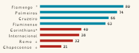
Ter 24: Chapecoense × Palmeiras (18h). Qui 26: São Paulo × Remo. Sex 27: Fluminense × Cruzeiro. Sáb 28: Botafogo × Bahia. Dom 29: Coritiba × Flamengo (16h) e mais quatro.
Sáb 28, 17h: Palmeiras × Estudiantes, final da Libertadores, em Montevidéu. Dom 6/12: Grêmio × Palmeiras, final da Copa do Brasil, no Mané Garrincha.
A Seleção de Carlo Ancelotti encerrou 2026 com derrota de 3 a 2 para o Japão e vitória de 7 a 0 sobre Singapura, em novembro.
Sobral. O Vila Real venceu o Atlético Cearense por 5 a 1 no Estádio do Junco, em Sobral, e garantiu vaga na semifinal da Taça Fares Lopes. Jailson da Silva marcou três gols, segundo o Sobral em Revista (22/11). Adversário e data da semifinal ainda não foram divulgados.
Guarany. O jornal não encontrou notícia confirmada do Guarany de Sobral em novembro. Um jogo "Guarani × Tirol", pelas quartas da Fares Lopes, está marcado para quinta (26), às 19h, mas a fonte não diz se é o time de Sobral ou o de Juazeiro. O Icasa já está na semifinal.
Fortaleza. Perdeu a ida do playoff da Série B para o Criciúma por 1 a 0, gol de Marcelo Hermes. Na volta, sábado (28), às 20h, no Castelão, qualquer vitória dá o acesso, porque o empate no agregado favorece o Leão, que fez melhor campanha.
Ceará. O Vozão garantiu a permanência na Série B em 14/11, com empate de 1 a 1 com o CRB, jogando com um a menos.
Nordeste. Na Série A, o Vitória goleou o Inter (5 a 2) e o Bahia perdeu para o Coritiba (1 a 0) no sábado. Na Série B, o Sport terminou em 9º, o CRB ficou fora dos playoffs e o Náutico escapou da queda. O Santa Cruz subiu da Série C.
Ilustração original 360.
| Qui 26 | Guarani × Tirol (Fares Lopes), 19h |
| Sex 27 | Vila Nova × Atlético-GO, 20h (playoff B) |
| Sáb 28 | Fortaleza × Criciúma, 20h, Castelão |
| Sáb 28 | Botafogo × Bahia (Série A) |
Novorizontino campeão e Juventude com acesso direto. Caíram Ponte Preta, América-MG, Londrina e Avaí.
Maringá campeão em outubro. O Santa Cruz garantiu a volta à Série B após uma década.
Notícias do Guarany, do Junco e da base de Sobral entram aqui assim que houver fonte confirmada.
Copa Davis. A fase final reúne Itália, atual campeã, Espanha, Alemanha, Grã-Bretanha, Canadá, Áustria, República Tcheca e Coreia do Sul, de 24 a 29/11. O Brasil não se classificou. No domingo (22), Carlos Alcaraz venceu Alexander Zverev por 6/2 e 7/6 e ganhou o ATP Finals pela 1ª vez.
Champions. Hoje: Arsenal × Borussia Dortmund, Manchester City × Napoli e Real Madrid × PSV. Amanhã: Club Brugge × Liverpool, Lille × Bayern, PSG × Roma, Sporting × Manchester United, Inter × Stuttgart e Sabah × Barcelona. Horários de 14h45 e 17h.
Ligas. Na Inglaterra, o Liverpool fez 4 a 0 no Manchester United; Arsenal e Newcastle empataram por 2 a 2 e o City, 1 a 1 com o Fulham. Na Espanha, Real Madrid 2 × 1 Celta e Barcelona 3 × 2 Villarreal; o Atlético venceu o Getafe por 3 a 0.
F1. Em Las Vegas (21/11), Verstappen venceu, com Norris e Piastri no pódio; Gabriel Bortoleto, da Audi, foi 12º. Kimi Antonelli, campeão desde o GP do México, tem 402 pontos. O GP do Catar, em Lusail, vai de 27 a 29/11.
MotoGP. Marc Márquez garantiu o título em Portimão (22/11) e igualou os 8 títulos de Giacomo Agostini na categoria principal. A temporada fecha em Valência no fim de semana.
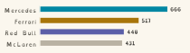
1. Antonelli © 402 · 2. Verstappen 304 · 3. Hamilton 267 · 4. Russell 264 · 5. Norris 264 · 6. Leclerc 250
Decisão em Interlagos, de 11 a 13/12. Felipe Fraga lidera com 813 pontos.
🏆 Boca Juniors 2 × 0 Atlético-MG em Barranquilla (21/11): 3º título do Boca, recorde do torneio.
🏆 Palmeiras × Estudiantes, às 17h, no Estádio Centenário, em Montevidéu. O Estudiantes eliminou o Flamengo.
João Fonseca encerrou a temporada em outubro, em 40º no ranking, após um ano com lesões.
Seleção feminina. O Brasil enfrenta o Japão no domingo (29), em Hiroshima, e em 5/12, em Okayama, nos últimos amistosos do ano. Kerolin está lesionada e Marta não foi convocada, segundo O Povo.
Temporada. O São Paulo foi campeão brasileiro feminino pela 1ª vez, em 3/10, com empate de 1 a 1 com o Corinthians. Em 1/11, em Quito, o Cruzeiro ganhou sua 1ª Libertadores Feminina, nos pênaltis, também contra o Corinthians.
Vôlei. Na Superliga feminina, após a 6ª rodada, o Sesc Flamengo lidera com 18 pontos, à frente de Minas e Sesi Bauru, com 17. Uma manchete de 23/11 informa vitória do Bauru sobre o Minas; o placar não foi confirmado. No masculino, o Cruzeiro estava invicto na liderança em 16/11.
Basquete. No NBB, o Minas era o único invicto, com 7 vitórias, em 11/11. Na NBA, o Miami Heat venceu o Oklahoma City Thunder por 123 a 113 em 22/11, com triplo-duplo de Bam Adebayo.
Lutas. No UFC Catar (21/11), Talisson Teixeira venceu Gaziev por decisão unânime; Alessandro Costa e Nikolas Motta perderam. O UFC 335, em 12/12, terá Charles do Bronx × Diego Lopes e Alex Poatan × Pavlovich.
Pontos após a 6ª rodada (19/11). Fonte: Web Vôlei.
🥊 Na luta principal em Doha, Navajo Stirling nocauteou Jiří Procházka.
🏄 Sem notícias confirmadas de brasileiros no surfe ou na Fórmula E entre 20 e 23/11.
Lesão de ligamento cruzado é mais comum em atletas mulheres. Programas de prevenção com aquecimento neuromuscular reduzem o risco.
GTA VI. Lançado em 19/11 para PS5 e Xbox Series, ainda sem data para PC, o jogo tem nota 99 no Metacritic, empatado com Zelda: Ocarina of Time no topo. A Sensor Tower estima 19,05 milhões de unidades até o dia do lançamento, contando a pré-venda; a Take-Two não divulgou números oficiais.
Lojas digitais. O Steam não faz promoção oficial de Black Friday: de 26 a 30/11, cada estúdio decide seus descontos. As indicações do Steam Awards abriram na segunda (23). A PS Store tem promoção até 30/11 e a eShop europeia, até 29/11.
Cinema. Entre as estreias de quinta estão O Sentido da Vida, de Ryusuke Hamaguchi, e a animação Enfeitiçadas: Bem-Vindos a Hexe. Nos EUA, Jogos Vorazes: Amanhecer na Colheita abriu com US$ 119,3 milhões no fim de semana.
Ciência curiosa. Jonathan, jabuti de 194 anos e o animal terrestre vivo mais velho conhecido, teve pistas genéticas da longevidade publicadas em 22/11. A Voyager 1 já está a cerca de um dia-luz da Terra. E poeira lunar impressa em 3D virou tijolos de encaixar.
Arqueologia. Um anel de bronze de cerca de 4 mil anos apareceu a 2.600 m de altitude nos Alpes suíços; no Egito, centenas de sarcófagos com "línguas de ouro" foram achados em Tell Abu Bellou.
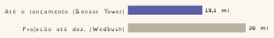
| Qua 25 | Blade Runner 2099 e final de Os Anéis de Poder (Prime Video) |
| Qui 26 | 16 estreias nos cinemas · começa a Black Friday no Steam |
| 3–6/12 | CCXP26, São Paulo Expo · 3/12 é o Marvel Day |
| 17/12 | Promoção de inverno do Steam, até 4/1 |
Superlua cheia hoje às 11h53, a 1ª de quatro seguidas. Urano fica em oposição na quarta (25): visível com binóculo em céu escuro.
Uma baleia de 6 milhões de anos achada no Peru teria o rosto mais assimétrico já visto entre mamíferos.
Hipopótamos e humanos dividiram lagos na Arábia, hoje deserto, há cerca de 125 mil anos.
Jogo de mundo aberto não tem fim natural. Antes de ligar, defina a hora de parar e ponha um alarme longe do sofá.
O mercado. Em outubro, foram emplacados 265,6 mil veículos, alta de 1,9% sobre outubro de 2025. No ano, até outubro, foram 2,52 milhões, alta de 16,1%. As marcas chinesas somam 19,1% do mercado e os eletrificados, 20,54%. A Fenabrave elevou a projeção de 2026 para alta de 12,8%, cerca de 5,6 milhões de unidades.
Nordeste. A BYD emplacou 5.183 carros na região em outubro, alta de 179,9%, e liderou o varejo, segundo o Diário do Nordeste. O Dolphin Mini foi o carro mais vendido do país no varejo naquele mês.
A conta honesta. Carro é bem de consumo: perde valor todo ano e custa seguro, IPVA, combustível e manutenção. Isso não impede a compra; pede que ela caiba no orçamento sem tirar o dinheiro da reserva e dos aportes (p.21).
Taxa zero. Compare o preço à vista com o total financiado. Quando a taxa é zero e o preço sobe, o juro está escondido no preço. Peça o CET por escrito e recuse seguro ou acessório empurrado como condição: é venda casada, proibida pelo Código de Defesa do Consumidor.
Usado. Laudo cautelar, consulta de débitos e restrições no Detran e test drive com mecânico de confiança. Desconfie de preço muito abaixo da tabela.
O Brent caiu 3,46% na segunda. Isso não muda o preço da bomba no dia seguinte: o repasse depende de decisão de reajuste da Petrobras e dos postos.
Preço à vista, CET, valor total, seguro cotado fora, IPVA e revisões do 1º ano.
Confira onde vai carregar em casa e no trabalho, a garantia da bateria e o seguro antes da compra.
Oferta de feirão "só hoje" volta na semana seguinte. Leve a proposta para casa e decida depois de três dias.
| Golpe da semana | Como funciona | Como se defender |
|---|---|---|
| Vídeo com IA | Famoso ou "especialista" recomenda loja ou produto em vídeo falso. | Ninguém famoso vende por link de anúncio. Procure a loja pelo nome no buscador e no Reclame Aqui. |
| Nome de entidade | Mensagem "da Febraban" ou "do Procon" pede dados para estorno ou cadastro. | A Febraban alerta: ela não liga nem pede dados. Desligue e procure o canal oficial. |
| Maquiagem de preço | Preço sobe dias antes e "cai" na sexta. | Anote hoje o preço do que precisa. Sem preço de referência, não há como saber o desconto. |
| Pix para recebedor errado | Site clonado gera Pix com nome de pessoa física ou empresa estranha. | Antes de confirmar, leia o nome do recebedor. Diferente da loja? Cancele. |
| "Taxa para liberar" | Link por WhatsApp cobra frete ou taxa para soltar compra "retida". | Rastreie só no site da loja ou da transportadora. Não pague por link. |
Pedido de devolução pelo app do banco quando houver fraude. Quanto antes, maior a chance de bloquear o dinheiro.
Reclamação direta à empresa, com prazo de resposta e registro público. O Procon atende o que não se resolve ali.
Consulte o CNPJ no site da Receita e o domínio .br no registro.br. Site criado há poucos dias é alerta.
Escreva antes o que precisa, com preço-teto. Item fora da lista entra na fila das 72 h.
Use cartão virtual de uso único ou com limite baixo para lojas novas. Se vazar, o prejuízo fica contido.
Contador regressivo é técnica de pressão. Feche o app, espere e volte com a lista.
Avise o banco pelo app, peça o MED, bloqueie cartões, troque senhas e registre boletim de ocorrência on-line. Guarde prints com data.
Compra pela internet ou telefone pode ser desfeita em 7 dias do recebimento, com devolução do valor pago, inclusive frete (CDC, art. 49).
| Item | Referência | Veredito 360 |
|---|---|---|
| iPhone 17 · 256 GB | Lançado a R$ 8.000; menor preço visto R$ 5.400; "bom" até R$ 5.100 e "ótimo" até R$ 4.800 (Canaltech, 18/10). | 🟡 Só se o atual não atende. Decidir após 72 h. |
| Notebook para estudo | Não verificado pelo jornal nesta edição. | ⚪ Preparar lista: memória, SSD, bateria e garantia. |
| Jogos digitais | PS Store até 30/11; eShop até 29/11; Steam de 26 a 30/11, por estúdio. | 🟢 Só o que já estava na lista de desejos. |
| Assinaturas | Planos anuais com desconto aparecem na semana. | 🔴 Cancele antes o que não usa. |
Notificação de oferta é gatilho de impulso. Silencie os apps de loja até sábado e compre só do computador, com a lista aberta.
Parcela "sem juros" cabe se o total já estava no orçamento. Somar parcelas novas às antigas é o atalho para o rotativo.
Ajustes › Geral › Atualização de Software › Atualizações Automáticas: deixe ligadas as de segurança.
Configurações › Windows Update: instale o pacote de novembro e reinicie. Pausar só por poucos dias.
O Radar não tem anunciante nem link de afiliado. Preços citados vêm de fontes datadas e mudam rápido.
A doutrina. Para o investidor conhecido como Bastter, patrimônio se acumula: a renda verdadeira é a do trabalho, e o que sobra dela vira aporte. A ideia central é poupar um percentual fixo da renda todo mês, por décadas, sem tentar adivinhar juros, câmbio ou bolsa.
Renda fixa. Na visão dele, a renda fixa serve para preservar o poder de compra e dar estabilidade. Tesouro Selic, CDB de banco sólido dentro do FGC e títulos atrelados à inflação cumprem esse papel. A doutrina também inclui ações; este jornal não trata de renda variável e não recomenda nenhum investimento.
Não acertar a hora. Ontem o dólar foi de R$ 5,93 a R$ 6,006 e voltou a R$ 5,926. Quem decide no susto compra no pico e vende no fundo. O plano feito com calma vale mais que a notícia do dia.
Os números de hoje. Selic de 13,75% (próximo Copom em 9/12). Poupança: 0,5% ao mês + TR; a TR de novembro foi de 0,1616%. Tesouro em 18/11: Selic 2031 a Selic + 0,1082%; prefixado 2029 a 14,94%; IPCA+ 2032 a IPCA + 7,74%. Taxas de 23/11 não foram encontradas.
Imposto. Vale a tabela regressiva: 22,5% até 180 dias, 20% até 360, 17,5% até 720 e 15% acima disso. LCI e LCA seguem isentas para pessoa física. A MP 1303/2025, que mudaria isso, perdeu a validade em 8/10/2025.
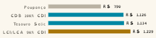
Defina um percentual do salário e do 13º e transfira no dia do pagamento, antes de gastar. Automatize.
Antes de qualquer outra meta, uma reserva de emergência com liquidez diária, para não vender nada no pior momento.
Conteúdo educativo. O jornal não é consultor financeiro e não recomenda produtos. Decisão relevante? Regra das 72 h e profissional certificado.
Terreno e imóvel. Antes de qualquer sinal: matrícula atualizada no cartório de registro, certidões do vendedor, IPTU e condomínio quitados e, em loteamento, registro do loteamento na prefeitura. Contrato de gaveta não transfere propriedade.
Crédito. Em 13/11, a Caixa admitiu que os juros da casa própria podem subir, sem dizer quanto nem quando. No fim de outubro, bancos privados cobravam de 12,49% a 15% ao ano mais TR. No Minha Casa Minha Vida, a renda máxima é de R$ 13 mil e o imóvel pode valer até R$ 600 mil na faixa de classe média.
Veículo. Carro não é investimento: deprecia e gera custo fixo. A conta honesta soma parcela, seguro, IPVA, combustível e revisões (p.17).
Compra e revenda. Quem revende com frequência precisa de CNPJ. O teto do MEI é de R$ 81 mil em 2026 e passa a R$ 110 mil em 2027 e R$ 140 mil em 2028, pela lei sancionada em 21/10. Emita nota, guarde a nota de compra e cumpra o Código de Defesa do Consumidor. Comprar mercadoria sem origem, muito abaixo do preço, pode configurar receptação (Código Penal, art. 180).
| 2026 | R$ 81 mil/ano |
| 2027 | R$ 110 mil/ano |
| 2028 | R$ 140 mil/ano |
A lei também perdoou dívidas do MEI inscritas até 13/10/2026.
Imóvel "de oportunidade" com sinal por Pix antes da visita: é a isca clássica. Visite, confira a matrícula e pague só com contrato.
Loja clonada e falsa taxa na Black Friday: entre pelo app oficial e leia o nome do recebedor do Pix (p.18).
Ferramentas: Registrato (BC), consumidor.gov.br, consulta de CNPJ na Receita, registro.br e o MED do Pix no app do banco.
Compromisso de longo prazo, como financiamento, consórcio ou contrato, espera três dias. Se a oferta some, não era para você.
Imóvel: advogado e cartório. Imposto e MEI: contador. Crédito: compare o CET de três bancos.
Na segunda (23), o dólar chegou a R$ 6,006 na máxima, pela 1ª vez desde abril de 2025, e fechou a R$ 5,926. A Selic está em 13,75%; o próximo Copom decide em 9/12 (p.4).
A Câmara aprovou o texto-base do ajuste fiscal por 353 a 128. Faltavam os destaques; sem mudanças, o projeto vai à sanção presidencial (p.2).
O Brent caiu 3,46%, a US$ 89,37, com a reabertura do oleoduto de Sharara, na Líbia. O preço na bomba depende de reajuste e não acompanha o barril no dia seguinte (p.17).
O Palmeiras joga hoje (24), a final da Libertadores no sábado (28), a última rodada em 2/12 e a final da Copa do Brasil em 6/12 (p.12). GTA VI saiu em 19/11, com nota 99 e estimativa de 19 milhões de cópias (p.16).
O teto do MEI é de R$ 81 mil em 2026 e sobe para R$ 110 mil em 2027 (p.21). No Steam, a Black Friday vai de 26 a 30/11, sem promoção oficial (p.16).
O sagrado. O Levítico diz que "a vida da carne está no sangue", e por isso a tradição judaica proíbe consumi-lo. No cristianismo, o cálice da Eucaristia é o centro do rito. No islã, o abate ritual escoa o sangue. As Testemunhas de Jeová leem o pedido de "abster-se do sangue", dos Atos dos Apóstolos, como proibição de transfusão.
A sangria. Galeno, no século II, ensinou que a doença vinha do excesso de um dos quatro humores. Tirar sangue "reequilibrava" o corpo. A prática durou até o século XIX e piorou febres, pneumonias e hemorragias. Hoje, a flebotomia só tem indicação precisa, como na hemocromatose e na policitemia vera.
A virada. William Harvey descreveu a circulação em 1628. Em 1667, Jean-Baptiste Denys transfundiu sangue de carneiro num homem, em Paris. Em 1818, James Blundell começou a transfundir sangue humano em mulheres com hemorragia pós-parto. Em 1901, Karl Landsteiner descreveu os grupos ABO, o que lhe valeu o Nobel de 1930. O citrato, em 1914, permitiu guardar o sangue, e em 1937 Chicago abriu o primeiro banco de sangue.
A fé no leito. Em 2024, o STF decidiu que o adulto capaz pode recusar transfusão por motivo religioso e que o SUS deve oferecer alternativas disponíveis. A decisão tratou de adultos; casos de crianças seguem outro caminho jurídico.
| ✅ | Flebotomia na hemocromatose e na policitemia vera |
| ✅ | Transfusão restritiva, Hb 7, na maioria dos críticos (p.8) |
| 🟡 | Sanguessuga em retalho com congestão venosa: uso restrito |
| 🔴 | Sangria para "equilibrar humores" |
| 🔴 | Sangue que transmite caráter do doador |
| 🔴 | Dieta pelo tipo sanguíneo (revisão de 2013 sem evidência) |
O Hemoce tem hemocentro regional em Sobral. Amanhã é o Dia Nacional do Doador de Sangue: quem pode doar encontra os requisitos na p.27.
Paciente que recusa sangue: pergunte cedo, registre a vontade, reduza coletas, trate a anemia com ferro e outras alternativas aceitas e acione bioética e jurídico. Respeito à fé e segurança clínica andam juntos.
A medicina parou de sangrar pacientes quando passou a contar os resultados. A mesma régua vale hoje para qualquer tratamento, antigo ou novo.
O gene. A rainha Vitória, do Reino Unido, transmitiu a hemofilia a parte de seus descendentes. Uma neta, Alexandra, casou-se com o czar Nicolau II. O filho, Alexei, nascido em 1904, sangrava a cada queda. Em 2009, a análise de DNA dos restos da família mostrou que era hemofilia B, falta do fator IX.
O místico. Grigori Rasputin ganhou a confiança da imperatriz por parecer acalmar as crises do menino. Em 1912, numa hemorragia grave, mandou dizer que os médicos não o atormentassem, e Alexei melhorou.
Hipóteses, não fatos. Historiadores e médicos levantam explicações: o sangramento pode ter parado sozinho; a calma pode ter reduzido a agitação; e afastar médicos teria evitado a aspirina, que piora o sangramento e era novidade na época. Nenhuma delas pode ser provada.
O custo político. A influência de Rasputin desgastou a monarquia durante a guerra. Ele foi morto por nobres em dezembro de 1916; a revolução veio meses depois, e a família foi executada em 1918.
Ilustração original 360. X* = cromossomo X com o gene alterado.
Tradições de proteção, bênção e cuidado simbólico, sem intenção de dano. Não é tratamento. Quem cobra para "desfazer trabalho" ou promete cura de doença grave aplica golpe.
O libelo de sangue, a falsa acusação de que judeus usariam sangue em rituais, justificou massacres por séculos. O papa Inocêncio IV o condenou em 1247. Em 1913, em Kiev, o réu Mendel Beilis foi absolvido. Pânico moral é desinformação com consequências.
Em 21/9/2026, a OMS publicou uma agenda global de pesquisa em medicinas tradicionais para 2025–2034, com prioridade nas Américas para saúde mental, dor e envelhecimento. A OMS avisa que o texto não é diretriz clínica.
24: Kartika Purnima (hindu) · 25: Santa Catarina de Alexandria · 27: Nossa Senhora das Graças · 29: 1º Domingo do Advento · 30: Santo André.
Hemofilia junta o grego haîma, sangue, e philía, afinidade; o termo surgiu na Alemanha em 1828. "Sangue azul" vem do espanhol: a pele clara da nobreza deixava ver as veias.
Respostas: B (fator IX) · aspirina · 1247.
Bíblia. No Sermão da Montanha, Jesus pede que a esmola seja discreta: "não saiba a tua mão esquerda o que faz a direita" (Mateus 6:3). Paulo acrescenta que se deve dar com alegria, não por obrigação.
Torá. O Deuteronômio manda abrir a mão ao irmão necessitado, sem endurecer o coração. A palavra hebraica tsedacá quer dizer justiça: ajudar não é favor, é obrigação.
Talmude e Maimônides. No século XII, Maimônides organizou a tsedacá em oito degraus. Dar de má vontade fica embaixo. No alto, dar sem que um saiba do outro e, acima de tudo, oferecer trabalho, sociedade ou empréstimo para que a pessoa não precise mais pedir.
Alcorão. O zakat, contribuição anual sobre a riqueza acumulada, é um dos cinco pilares do islã. A caridade voluntária, a sadaqa, perde o valor quando vem com alarde ou ofensa a quem recebe (2:264).
Confúcio. Nos Analectos, o homem de bem, querendo se firmar, ajuda os outros a se firmarem; querendo crescer, ajuda os outros a crescer.
Buda. A dāna, generosidade, é a primeira das perfeições. Dar enfraquece o apego, e o valor do gesto está na intenção, não no tamanho.
Ilustração original 360. Fonte: Maimônides, Mishné Torá, Leis da doação aos pobres, 10:7–14.
Generosidade também é tempo: explicar de novo à família, sentar para dar a notícia, ensinar o residente sem plateia.
Dar com plano protege quem dá: um valor fixo por mês, decidido com calma, evita a culpa e o impulso (p.20).
Pense em alguém que ajudou você sem querer nada em troca. O que ele fez que você pode repetir esta semana?
Quem pode doar. Pessoas de 16 a 69 anos (menores com autorização dos responsáveis; a 1ª doação até os 60), com pelo menos 50 kg, descansadas, alimentadas e com documento oficial com foto. Evite alimentos gordurosos nas horas anteriores.
Intervalo. Homens podem doar a cada 60 dias, até 4 vezes por ano; mulheres, a cada 90 dias, até 3 vezes por ano. Cada doação separa hemácias, plasma e plaquetas, que vão para pacientes diferentes.
A ciência de dar. Num experimento publicado na Science em 2008, pessoas que receberam dinheiro para gastar com outros terminaram o dia mais felizes do que as que gastaram consigo mesmas. O efeito não dependeu do valor.
Na UTI. No Brasil, a doação de órgãos após morte encefálica depende da autorização da família (Lei 10.211/2001). O diagnóstico segue a Resolução CFM 2.173/2017. A conversa sobre doação deve ser separada da notícia da morte, feita com tempo e, se possível, com a equipe da comissão intra-hospitalar.
Ilustração original 360, esquemática.
A pediatra Zilda Arns fundou em 1983 a Pastoral da Criança, que levou o soro caseiro e a pesagem de bebês a comunidades pobres. Morreu no terremoto do Haiti, em 2010, em missão.
O Hemoce tem unidade regional na cidade. Antes de ir, confirme horários e campanhas nos canais oficiais do hemocentro.
Critérios de aptidão mudam e têm exceções: tatuagem, viagem, remédios e doenças recentes são avaliados na triagem.
Micropausas. Uma metanálise publicada em 2022 na PLoS One reuniu estudos sobre pausas de até 10 minutos. Elas aumentaram a sensação de vigor e reduziram a fadiga. O efeito sobre o desempenho dependeu da tarefa: maior em trabalho repetitivo ou criativo, menor em tarefa cognitiva exigente.
Depois do prato. Outra revisão de 2022, na Sports Medicine, mostrou que caminhadas leves de 2 a 5 minutos depois das refeições reduzem o pico de glicose em comparação a ficar sentado. Ficar em pé ajuda menos, mas ajuda.
Olhos na tela. A regra 20-20-20, a cada 20 minutos olhar a 6 metros por 20 segundos, é recomendação de oftalmologistas; a evidência é modesta, e o custo, quase zero.
Calor seco. Com umidade baixa até quinta, beba água antes da sede, use soro fisiológico no nariz e nos olhos se ressecarem e deixe atividade física para o início da manhã ou a noite.
| ✅ | Micropausa de até 10 min reduz fadiga |
| ✅ | Caminhar 2–5 min após comer baixa o pico de glicose |
| 🟡 | Regra 20-20-20 para os olhos |
| 🟡 | Pomodoro de 25 min: funciona para muitos, pouco estudado |
Filho de pais que haviam sido escravizados, nasceu em Desterro, hoje Florianópolis, em 24/11/1861. Nomeado promotor em Laguna, foi impedido de assumir por racismo. Seguiu escrevendo e, com Broquéis (1893), inaugurou o simbolismo no Brasil.
Nascido em São Paulo em 24/11/1874, voltou de estudos na Inglaterra em 1894 com bolas e regras do futebol. Ajudou a organizar os primeiros jogos e campeonatos do país.
Hoje, depois do almoço, caminhe 5 minutos antes de voltar à cadeira.
Garrafa à vista na bancada do plantão. O que não se vê não se bebe.
Quarto escuro e fresco, celular fora do alcance e cochilo antes de dirigir, se o cansaço for grande.
O céu. A Lua fica cheia às 11h53 de Brasília, de dia; o melhor momento para ver é o nascer, ao entardecer, perto do horizonte leste. Na madrugada, Vênus e Mercúrio aparecem baixos a leste antes do Sol. À noite, Saturno brilha em Peixes. Urano fica em oposição na quarta (25). O Sol está em Sagitário desde 22/11.
Astrologia é tradição. Muitas pessoas leem a Lua cheia como fase de colheita e fechamento. O jornal registra o costume como cultura; a ciência não encontrou efeito da Lua sobre o comportamento (Arcanos, nº 017).
A planta. A carnaúba, "árvore da vida" do sertão, é símbolo do Ceará. Da folha sai a cera usada em polidores, cosméticos e no revestimento de comprimidos. Do tronco, viga; da palha, chapéu e esteira.
O animal. A jandaia-verdadeira, periquito amarelo e verde que só existe no Nordeste, é a ave que acompanha Iracema no romance de José de Alencar. Vive em bandos barulhentos e come frutos e sementes.
Mensagens da tradição. No sertão, os profetas da chuva leem sinais em plantas, formigas e pássaros e se reúnem todo janeiro em Quixadá. É saber popular, sem comprovação; a previsão oficial é da Funceme.
Ilustração original 360. Fontes: Space.com e Sky at Night (11/2026).
Ao entardecer, a leste: a Lua nascendo grande e alaranjada. É ilusão do horizonte somada à superlua.
Com 38 °C e ar seco, regue plantas no fim da tarde e deixe água rasa para os pássaros.
Que ave acompanha Iracema? Onde se usa a cera de carnaúba na farmácia? Jandaia · revestimento de comprimidos.
No Safari, compartilhe a página do produto para Notas com a data. Na sexta, compare com o preço anotado: desconto real tem histórico.
Ajustes do Sistema › Foco › Não Perturbe com horário fixo. Silencie apps de loja e redes durante o bloco de estudo do TEMI.
O pacote de novembro corrige falha já explorada no Outlook. Configurações › Windows Update › Verificar atualizações e reiniciar.
No Pix, a tela de confirmação mostra o nome de quem recebe. Leia sempre. Loja com nome de pessoa física é sinal de alerta.
Imagens em WebP e com largura definida fazem a página abrir rápido no 4G do interior. Teste no celular, não só no computador.
Um PDF simples, "como doar sangue em 5 passos", para clínicas e empresas. Diga que usou IA, confira cada regra no Ministério da Saúde e use só imagens próprias.
Toda pausa ganha dois alarmes: o de começar e o de voltar. Sem o segundo, a pausa vira tarde perdida.
Dia Nacional do Doador de Sangue. Confira os requisitos na p.27 e o horário do hemocentro antes de sair.
Jornal Diário 360 · Radar 360 Circunstancial · edição nº 018 · 30 páginas · fechamento na noite de 23/11/2026. Produção: Agente Editorial 360, com o Claude (Anthropic). Gráficos, tirinhas e ilustrações originais; nenhuma foto de terceiros. Política sem partido; saúde e finanças em caráter educativo. Correções são publicadas na edição seguinte. Pesquisa limitada ao que as fontes publicaram até o fechamento; destaques do ajuste fiscal não confirmados.